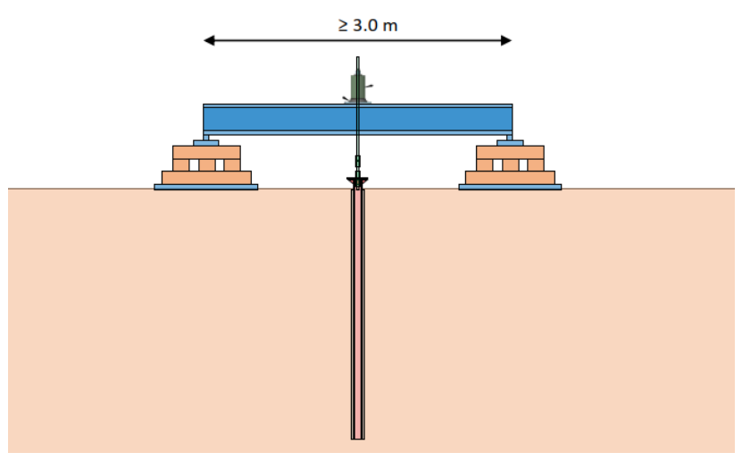
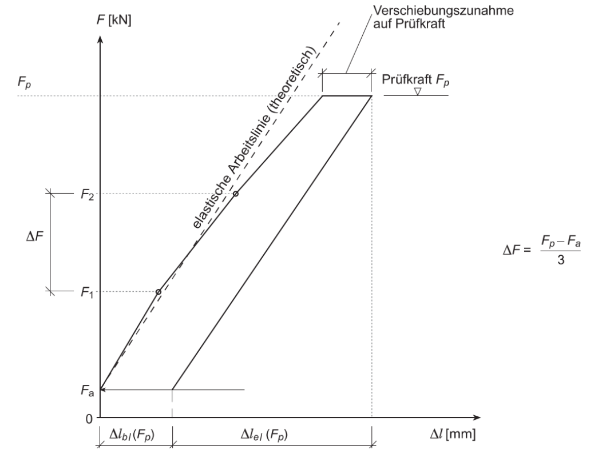

Pfähle für Zugproben – 6 in PZ3, 2 in PZ4
An diesen Bauwerks-Pfählen wird die Tragfähigkeit geprüft (Zugprobe). In PZ4 folgen noch 2 weitere – die legt ILF noch fest.
⚠ Diese Pfähle NICHT normal injizieren
Zuerst einen GEWI-Stab Ø 40 mm ins Rohr – über die ganze Pfahllänge – und mit einbetonieren. Oben muss der GEWI über den Pfahl hinausragen: daran zieht die Presse.
Ablauf
- Bohren: der Geologe ist bei jeder Bohrung dabei. Für jede Bohrung ein Bohrprotokoll.
- GEWI Ø 40 einsetzen, über die ganze Pfahllänge einbetonieren. Wie weit er oben herausragt, legt STRABAG fest.
- Prüfaufbau: Prüfbalken mind. 3 m, zwei Auflager links und rechts. Je Auflager mind. 1.0 m² Stahlplatte flach auf Kiesbett. Gezogen wird mittig, in der Pfahlachse. Statik des Prüfbalkens: STRABAG.
- Prüfen nach SIA 267/1, 7.2.3: 4 Laststufen je Typ, auf der Prüfkraft 15 Minuten halten und ablesen (Reiter 📈 Prüfung).
- Danach: GEWI oben abschneiden, Pfahlkopf nach dem Korrosionsschutzkonzept (B18-13_STRABAG_Korrosionsschutz_NalpSolar) aufsetzen.
- Abgeben an ILF: je Pfahl eine Excel mit Zeit, Last, Verschiebung und Kriechdiagramm – dazu die Bohrprotokolle.
Noch offen
- PZ4: ZP_3-4 und ZP_4-4 stehen in der Anweisung noch als «tbd».
- Typ E (Tisch 850, 1667, 2275): die Anweisung schreibt «lotrecht», der Typenplan 0289 zeigt den Tal-Pfahl Typ E mit 10° Neigung. Neigung vor dem Bohren und vor dem Aufbau mit der Bauführung klären.
Quelle
Baustellenanweisung NalpSolar_51_BA_0269_A1_MT-Zugpr-PZ3-PZ4_260925 «Zugproben PZ3 und PZ4»,
ILF (F. Nothdurfter), 25.09.2026, auf ACC als GzA-A1. Gehört zu PL_0289_A1 (Mikropfahl-Typenplan) und
BE_0283_A4 (Pfahl-Kontrollplan).
Lage der Pfähle aus der Anweisung (Tabelle 1 + 2), gegen die Bohrpunkte der Website geprüft: alle 8 auf ≤ 8 cm.
Stand je Pfahl aus Nalpi (Tagesexport) + BuildTrack live.

Laststufen in kN
So wird geprüft
- Fa aufbringen → hier die Nullmessung der Verschiebung.
- Auf Fp spannen. Auf F1 und F2 die Verschiebung Δl ablesen – ohne Wartezeit.
- Auf Fp die Kraft halten (auf ± 1 kN genau) und die Verschiebung ablesen nach 0 · 1 · 2 · 5 · 10 · 15 Minuten.
- Zug immer in Pfahlachse.
- Je Pfahl in die Excel: Zeit, Last, Verschiebung, Kriechdiagramm.
Pfahl je Typ
